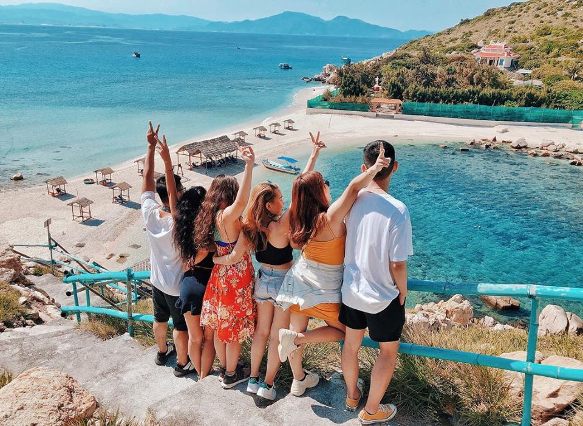
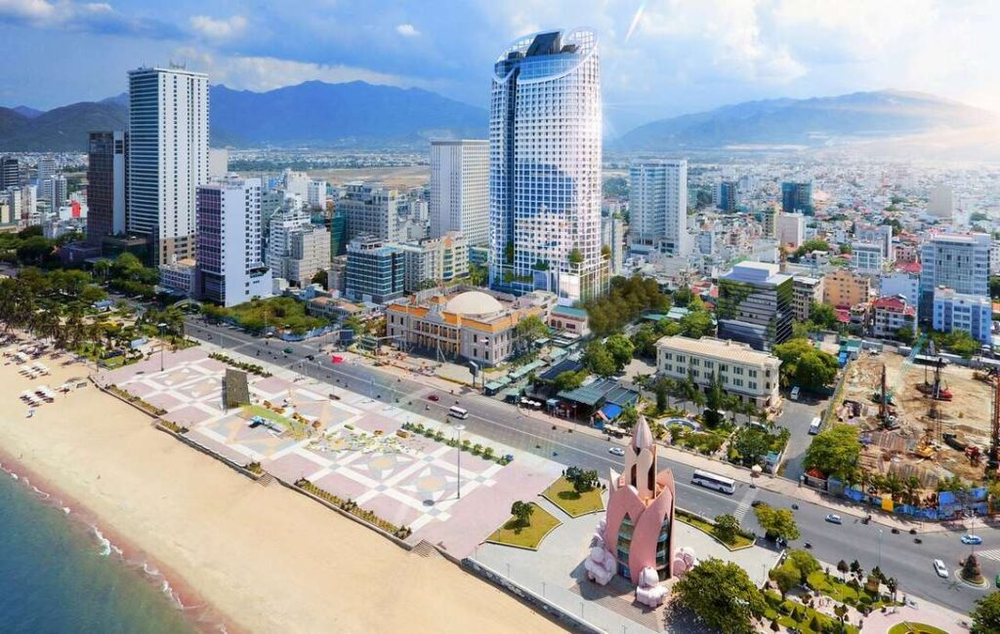

Thoải mái du hí với bí kíp du lịch Nha Trang tự túc từ A-Z
25/09/2021
Nha Trang luôn là một trong những thiên đường biển đẹp nhất Việt Nam khiến bao du khách trong và ngoài nước mê mẩn. Dân ưa xê dịch chúng mình thì càng không thể không một lần du lịch tự túc đến Nha Trang xinh đẹp. Yên tâm nhé, bài viết này sẽ gói gọn […]
Condotel là gì? Kinh nghiệm thuê Condotel Nha Trang chất lượng giá tốt
25/09/2021
Ngày nay, với nhu cầu nghỉ dưỡng ngày một tăng, chất lượng lưu trú trở nên ngày càng quan trọng. Là một thành phố du lịch, Nha Trang cho bạn rất nhiều sự lựa chọn tùy theo sở thích và ngân sách của mình, từ nhà nghỉ, khách sạn, homestay, đến villa, resort cao cấp. […]
ABOUT ME
Hướng dẫn viên du lịch Nha Trang với hơn 10 năm kinh nghiệm. Chuyên chia sẻ các tips và kinh nghiệm khám phá du lịch.
BÀI VIẾT MỚI
- Thoải mái du hí với bí kíp du lịch Nha Trang tự túc từ A-Z
- Tứ Bình Cam Ranh - Thiên đường "Maldives" hoang sơ của Việt Nam